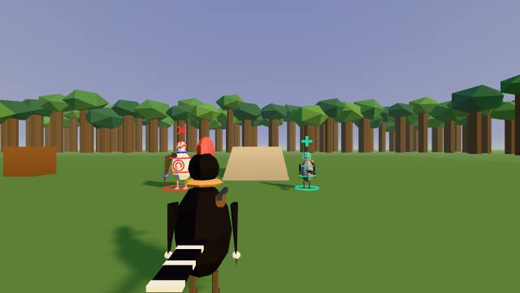
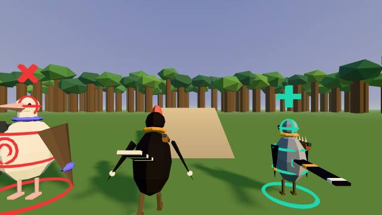

Hornbill Playable
Gun carry · Playable since Stage 3
Appearance: upright and heavy-chested, with a huge down-curved yellow-red bill topped by a tall helmet-like casque that doubles the head's apparent height; long tail. Black body, white belly and tail bands. Reads as "bird wearing a helmet on its bill".
How to play
Gun carries win fights with their weapon. They want a clear line of sight, steady aim at the head for beak shots, and the items that make the gun stronger (the Talon column). Stay behind your tanks and let the gun do the work.
Hornbill fights with the Casque Rifle, which hits instantly. Damage drops off between 22 m and 50 m, and head hits are beak shots worth ×1.65. Every level above 1 is a Molt: +36 max HP per level; +4% gun damage of base per level; +1 Song power per level; +3 melee damage per level.
Mark your target with Marked Prey and focus them. Heavy Rounds slow, so open with them when you want a kill. Bounding Hop refills half the magazine mid-fight.
Abilities
Four abilities. Slots 1 to 3 unlock at level 1, the ultimate at level 6. Each can be upgraded three times, for 1, 2, 5 AP, in order; see Ability Points. The shortest cooldown in the kit is Bounding Hop at 12 s.

1. Heavy Rounds
Your next 6 shots within 8 s deal +40% gun damage and slow heroes they hit by 15% for 1.5 s.
- Tier 1 · 1 AP+2 rounds: 8 heavy shots rounds +2
- Tier 2 · 2 AP-3 s cooldown cooldown -3 s
- Tier 3 · 5 APHeavy rounds pierce one extra target
2. Mud Seal
A barrier of 200 + 2.0 x SP for 5 s. While it holds you fire 20% faster.
- Tier 1 · 1 AP+100 barrier (300 + 2.0 x SP) barrier +100
- Tier 2 · 2 AP-5 s cooldown cooldown -5 s
- Tier 3 · 5 APWhile the barrier holds you are immune to slows

3. Bounding Hop
Hop 8 m the way you are moving (0.4 s arc, 2 m high) and reload half your magazine.
- Tier 1 · 1 AP-2 s cooldown cooldown -2 s
- Tier 2 · 2 AP2 charges +1 charge
- Tier 3 · 5 APLeaves a 4 m slick where you took off: enemies on it are slowed 30% for 3 s
4. Marked Prey
Mark an enemy hero within 40 m for 10 s: it is revealed, your gun deals +40% damage to it and ignores falloff against it. If it dies marked, half the cooldown (45 s) is refunded.
- Tier 1 · 1 AP+4 s duration (14 s) duration +4
- Tier 2 · 2 APYour gun deals +60% damage to the mark
- Tier 3 · 5 APThe mark also has -20% Talon resist
Since Stage 3. See all heroes.